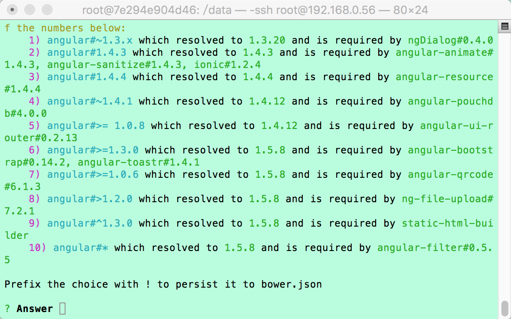

一 初始化的步骤
在搭建好环境的基础上，在/data目录下，我们要完成项目的初始化工作。 初始化分步进行： 首先，进行前台项目的检出； 接下来，是前台构建项目的检出，引入构建项目和前台项目的依赖； 最后，新建Cordova项目，并完成安卓平台的引入。
二 初始化的目录结构
－项目名（前台项目） | －项目名＋Builder（static-html-builder） | －项目名＋Cordova（cordova项目) | －init.sh（初始化项目脚本） | －build.sh（构建apk脚本）
三 开始初始化
- 首先，运行初始化脚本
./init.sh
- 接下来，根据下面提示输入svn的路径
Please input the svn path of your Project!
示例：
http://XX.XX.XX.XX/svn/VIS/VISAPP/branches/dev
- 根据下面提示输入项目名称
Please input your Project Name!
示例，这样就可以在/data目录下新建一个叫XXXX的项目：
XXXX
- 根据提示输入你的svn用户名密码，同意保存密码（输入yes），构建就开始了
- 项目依赖可能会冲突，在构建过程中需要你去解决冲突； 
- 最后，等待构建完成吧。
- 配置测试签名文件,替换系统中默认的测试签名文件：
cp XXXX/buildConfig/keyStore/android/test/debug.keystore ~/.android/debug.keystore